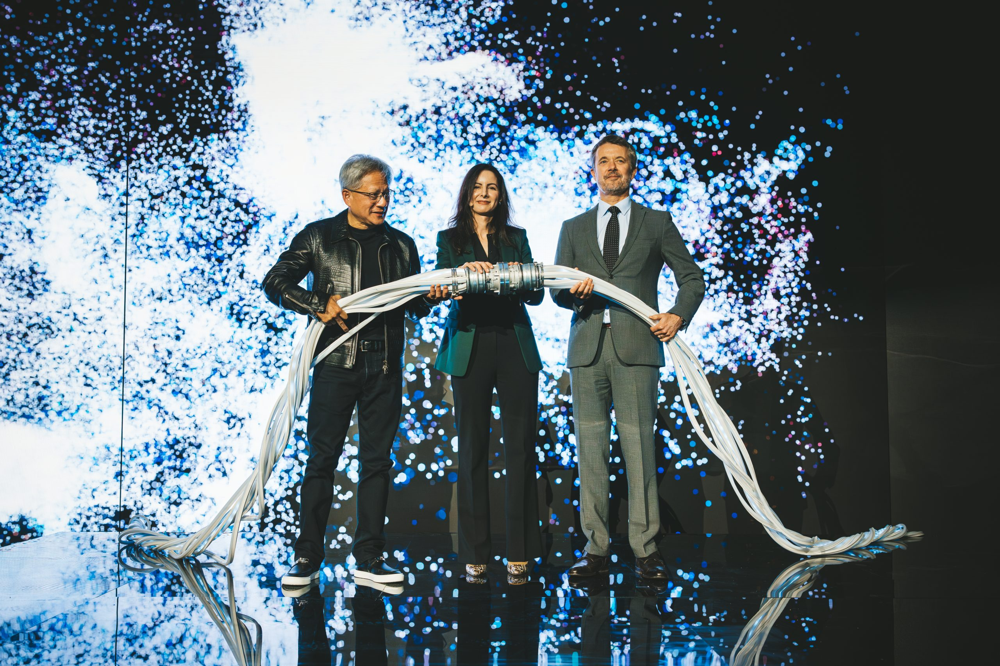
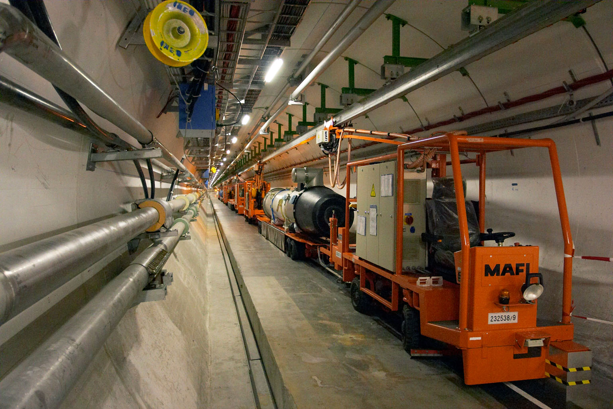

Executive Summary
This article reads the RAISE pledging initiative the European Commission opened in Dublin on October 15, 2026. RAISE is a virtual research institute meant to pool the AI compute, models and data that European researchers use and open them in one place. What was added this time is a list of promises, written by companies and foundations offering up resources of their own.
Seven organizations pledged first. Google is giving up to 200 European researchers direct access to Google DeepMind's frontier models together with $3 million in cloud credits, and the Novo Nordisk Foundation intends to open the computational capacity of Gefion, an AI-dedicated supercomputer. The categories the Commission names as eligible contributions cover not only compute and models but datasets and software licenses as well. And the whole thing is reviewed once a year.
Sections 1 through 4 follow what the Commission's own guidance and press release say, alongside the announcements the pledging organizations issued separately that same week. Section 5, which treats a research data access right now resting on this kind of pledge as a reproducibility question, is this article's interpretation.
Key Numbers
The first two measure what companies put on the table this time. The last two measure the public money those contributions landed on, and how often the pledges themselves come up for review.
Source: European Commission RAISE pledging page · Commission press release IP/26/2175 · RAISE funding page (October 15, 2026)
$3 million
Cloud credits pledged by Google
Google's own post puts the recipients at up to 200 European researchers. Access to DeepMind frontier models travels with it
1,000
Datasets Frontiers will curate
AI-powered curation of Horizon Europe datasets. With 100 grants alongside it, more than €1.6 million in services
€107 million
Public money dedicated to the RAISE pilot
The Horizon Europe 2026–2027 work programme share. €33 million from 2025 came before it, and a separate €600 million is set aside for compute access
One year
Review cycle for the pledges
One of the two continuity sentences in the press release. No pledge term and no exit procedure are set down in the published documents
The Seven Pledges Set Out in Dublin
The European AI in Science Summit ran in Dublin on October 15, 2026, organized jointly by the Commission and Ireland as the Presidency of the Council of the European Union. There the Commission launched the RAISE pledging initiative, and seven companies and foundations went down as its first pledging organizations. A page run by the Commission's Directorate-General for Research and Innovation gives each of them a paragraph on what they are offering.
What is on offer differs in kind from one organization to the next. Some open compute. Some release models. One publisher gives access to material and software licenses it had been holding. The same word, pledge, covers all of them, yet what a researcher actually ends up holding is not the same thing twice.

| Pledging organization | What it is offering |
|---|---|
| $3 million of Google Cloud credits and tokens for European researchers, plus direct access to Google DeepMind's frontier scientific models | |
| Novo Nordisk Foundation | Computational capacity of Gefion, an AI-dedicated supercomputer, offered on secure and sovereign infrastructure |
| NVIDIA | Openly available scientific AI software and models, practical training, technical expertise, and pathways to compute and research support. Among the stated aims of this pledge, the Commission page lists helping researchers adopt reproducible AI workflows |
| Elsevier | Complimentary LeapSpace licenses and a Europe-wide LeapSpace Challenge, funded research collaborations for PhD and postdoctoral researchers, ClinicalKey AI licenses for the health sector, Complete Anatomy licenses, and access to the scientific content and data Elsevier has built up |
| Frontiers | AI-powered curation for 1,000 Horizon Europe datasets and 100 FAIR² Data Publication Grants, together more than €1.6 million in services, free to researchers. Early access to Frontiers Data, and the FAIR² open specification for institutions and repositories to adopt |
| Mistral | Open-weight models, API credits, Vibe seats for researchers, PhD internships, part-time research roles and university collaborations |
| Sanofi | Building a European ecosystem for AI-driven healthcare innovation through Future4Care |
The table carries over what the Commission's RAISE pledging page states. For some of these pledges the Commission attaches no monetary figure.
The Commission page is not the whole record. Three of the pledging organizations issued announcements of their own, and those carry numbers the Commission left out. Google fixes the reach of its pledge at up to 200 top European scientific researchers, and names AlphaFold 3, AlphaGenome and WeatherNext among the tools it is opening. Elsevier counts its complimentary licenses as 1,000 for each of four products, 4,000 in total, and puts its own annual outlay at an estimated €1 million in in-kind support and funding. NVIDIA takes as its starting point the more than 250 open models, 250 open datasets and over 1,400 open source software projects it has already released.
One item sits outside the list. According to the Commission's press release, Mistral AI and CERN launched a new partnership as part of the initiative, to develop what is set to become the largest foundation model in physics. CERN tells the same story a little differently. What the two signed is a statement of intent to establish a long-term strategic partnership, the Large Physics Model they want to build is to be trained on billions of simulated proton-proton collisions at the Large Hadron Collider, and the name RAISE appears nowhere in CERN's announcement. Where the credits and licenses on the pledge list lend a resource out, this one has a research institution and a model company agreeing to build something together.
If the Public Money Is Already There, What Are the Pledges For?
RAISE is short for Resource for AI Science in Europe. It is the centerpiece of the European Strategy for AI in Science the Commission issued in October 2025, and rather than putting up a new building it was designed as a virtual research institute linking infrastructure that already exists across Europe. The Commission's stated aim is to pool compute, data, talent and research funding and open them to European researchers.
This design is presented as the instrument that delivers the CERN for AI that Ursula von der Leyen promised during her re-election campaign in July 2024. It is not a facility gathered on one site, though. Europe chose instead to connect existing infrastructure wherever it sits, with thematic networks of excellence and a central secretariat tying them together.

Public money is already attached. By the Commission's own guidance, €33 million was allocated under the Horizon Europe 2025 work programme and €107 million under the 2026–2027 work programme. The pilot launched earlier, in Copenhagen on November 3 and 4, 2025. So the Dublin announcement is not public budget swapped out for corporate money. It is a layer of private in-kind contribution laid over a public program that was already running.
That is also how the Commission frames it. The press release defines the purpose as mobilizing private-sector and philanthropic support "beyond what public funding alone can provide". The RAISE funding guidance states that at its start the initiative is funded exclusively via Horizon Europe. On the public side, a separate €600 million is committed to widening research compute, which the Commission plans to spend on securing dedicated access to AI gigafactories for European researchers and startups. The corporate pledges do not stand in for that money. They stand beside it.
The trouble is that the two layers are not alike. Public funding is written into a work programme that states how much is committed and which years it runs through. The pledges carry no such schedule. Each organization decides for itself what it offers and how much, and whether that offer carries into the next year is settled when the next review comes round.
The Commission presents the design as a turning point. Ekaterina Zaharieva, Commissioner for Startups, Research and Innovation, is quoted in the press release saying that "Our ambition for AI in science can only become reality if we bring together the strengths of our research community, industry and other partners," and that the pledging campaign "is now turning this ambition into concrete commitments that give researchers access to the tools, expertise and resources they need to innovate."
Doubts about the scale were already around when the public track was unveiled. Thomas Jørgensen, director of policy coordination and foresight at the European University Association, told Science|Business that "Raise is still at a stage where it can be anything to anybody, a process rather than a structure." He agreed that coordination at European level is needed, while pointing out that the fields hungry for better data, the fields hungry for compute and the fields hungry for talent are not the same fields.
Datasets and Licenses Are on the Pledge List
The Commission spells out by category what may count as a pledge. The press release lists "financial support, access to computing infrastructure, AI models, datasets, cloud services, software licences, scholarships, fellowships, and training programmes". Nine kinds of thing, laid out side by side in a single line.
Two of those nine behave unlike the rest. Compute credits get spent, and when they run out the results stay in your hands. A scholarship works like that too. The year of study ends and the degree remains. Data does not work that way. It has to stay where it is long after the result is published, because anyone who wants to check a number in a paper has to open that data again. A tool held under license behaves the same. Lock the tool and any procedure that only runs inside it stops there.
These categories are not abstractions on the page. Frontiers is curating 1,000 Horizon Europe datasets with AI and giving 100 FAIR² Data Publication Grants to early-career researchers, which the Commission guidance puts at more than €1.6 million in services, free to researchers. What Elsevier is offering in LeapSpace, ClinicalKey AI and Complete Anatomy is licenses throughout. What the researcher comes away with is not a file but a permission.
The list holds two kinds of thing, though. Handing something over outright and lending it for a while sit side by side inside one category. The open models and datasets NVIDIA names as its starting point already sit on Hugging Face and GitHub, and its Deep Learning Institute course materials are distributed under an open license with no enrollment, fees or deadline. Mistral's open-weight models fall on the same side, as does the FAIR² open specification Frontiers is putting out for institutions and repositories to adopt. On the other side, Elsevier's 4,000 licenses, Google's credits and model access, and the seats on Gefion are permissions with a clock on them. If a pledge goes unrenewed, the first kind is still on your disk and the second is gone.
When public research infrastructure supplies data, it has usually meant taking on ownership and preservation along with it. Supplying it by pledge means some of what comes through is only a permission on loan. On an ordinary day the two look identical. The difference shows up the day after the supply stops.
How Many Years a Pledge Runs Is Not in the Published Documents
The Commission press release gives continuity two sentences. The first is a condition of entry: to participate, an organization must make a concrete pledge showing "sustained support for AI in science beyond their direct commercial interests". The second is the review cycle: the initiative will be reviewed annually, with pledges and progress presented at future editions of the European AI in Science Summit. Neither sentence attaches a number of years. How long a pledge runs, what procedure withdrawing it would take, and what a researcher would be owed if one were withdrawn are missing from both the press release and the guidance page.
Getting in looks less like filing paperwork than like starting a conversation. The Commission opens a single dedicated email address to private and philanthropic organizations wanting to contribute, and invites them to bring resources, technologies, capabilities or expertise. What pledging organizations sign up to is four principles: scientific excellence, responsible and trustworthy AI, collaboration, and respect for applicable legal and ethical standards. None of them asks anyone to keep supplying for a given number of years.
The charter the pledging organizations sign together sets out those principles and then says that individual organizations will translate this commitment into concrete pledges, set out separately. The document everyone signs and the document where the actual terms land are separated from the outset. The charter also keeps the RAISE routing soft, promising to "seek to make" contributions available through or aligned with RAISE "where relevant". Elsevier, in its own announcement, said it would continue working with the Commission to refine the details of its pledge in the weeks after the Summit. What was settled on announcement day was the shape of the pledge.
Layer on top of this the unevenness from section 1. One lab runs its models on Gefion's computational capacity, another analyzes datasets Frontiers has curated, a hospital research team reads clinical material through an Elsevier license. If a single pledge goes unrenewed, research does not stop all at once. Only the work leaning on that one resource stops. The interruption arrives patchy rather than total, which also makes it hard to count from outside how much of the field went dark.
Here is where the question comes. When somebody tries in 2029 to check a result produced in 2026 from a pledged dataset, what guarantees that the dataset is still open? What the documents answer with today is an entry condition asking for sustained support and a review that comes round once a year. Neither says how many years.
Why Pebblous Is Watching This Pledging Initiative
Saying that data is usable folds two things together. One is that the data has been cleaned into usable shape. The other is that you can open it right now. Data quality work mostly handles the first. What this initiative exposes is the second. However well prepared a dataset is, if the right to open it lasts a year, the shelf life of every result drawn from it follows that right.
So anyone working with data received from outside needs to record the terms it arrived under as carefully as the data itself. At minimum, three things have to sit next to the material for it to be traceable later.
- Whose pledge it came through. Without the provider's name and the date of receipt, there is no way to tell what changed when the terms change
- Whether what arrived is a file or a permission. A copy you still hold can be opened again after the provider walks away; a permission ends on the day it lapses
- Whether another route to the same result exists if that resource goes away. If there is none, that fact is itself a condition that should travel with the result
None of this is a charge against the Commission. When public budgets cannot buy all the compute and models a continent's science needs, pulling in what companies hold is a practical choice, and real research runs on the resources it opens. Readers of the results do need one more thing, though: a view of the conditions the work was built on, and of how long those conditions hold.
Editor's Note
The number that lasts longest out of this initiative will probably not be $3 million. Amounts change on next year's list. The structure does not. Once a layer of research infrastructure is filled by promises renewed each year, the reproducibility of what gets built on top of it runs on the same cycle. The next question for an organization taking in data is not whether this data is good, but how many years it can keep opening it.
Thank you for reading this far. The figures and pledge contents in this article were checked directly against the European Commission's official guidance pages, its press release and the pledging organizations' own announcements. If some of the outside data you work with would be impossible to reproduce a result from once the permission lapses, we would be glad to hear which, and where that fact is written down.
Pebblous Data Communication Team
October 23, 2026
References
European Commission Official Pages
- 1.European Commission. (2026). "RAISE Pledging Initiative — AI in Science Enablers." Research and Innovation.
- 2.European Commission. (2025). "European Strategy for AI in Science." Research and Innovation.
News Coverage
- 3.The European Sting. (2026). "Commission launches RAISE pledging initiative to boost AI support for researchers across Europe."
- 4.ERA Portal Austria. (2026). "EC launches RAISE pledging initiative to boost AI support for researchers across Europe."
- 5.Science|Business. (2025). "The EU's AI in science plan gets a mixed reception."
- 6.The Brussels Times. (2026). "EU initiative pushes AI tools for science but demands ethical research."